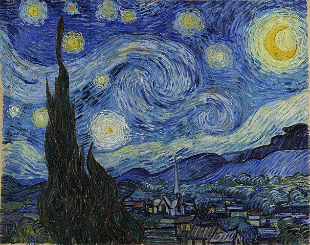

Art is a way to express one's thoughts and feelings, evoking different emotions in the viewer, such as joy, sadness, motivation, and so on.

1. Traditional Art: Traditional art, like Van Gogh's "The Starry Night," shows deep feelings and beauty. His bold colors and strong brushstrokes share emotions like joy, sadness, and passion. These artworks tell stories and help us connect with the artist's thoughts and emotions, making us feel something personal and meaningful.
2. Performing Art: Gardetanz is a fun and energetic dance that mixes skill and art. With precise moves, colorful costumes, and creative choreography, it shows tradition and teamwork. It’s an art because it tells a story, brings people joy, and highlights the dancers’ hard work and passion for performing.
3. Digital Art: Digital art is a form of art created using digital technology. It includes drawings, paintings, animations, 3D models, and more, made with tools like computers, tablets, or software programs. Digital art allows artists to experiment with colors, styles, and effects easily, offering endless possibilities to express creativity in a modern way.
4. Craftsmanship: Craftsmanship is the skill of making things with care and detail. It focuses on quality and combines usefulness with beauty. From handmade furniture to fine jewelry, it shows creativity and hard work. Craftsmanship turns simple materials into special items that people admire and that keep traditions alive.
5. Literary Art: Literary art uses words to inspire, entertain, and express ideas. Through stories, poems, and plays, it captures emotions and explores human experiences. Writers create vivid worlds, share deep feelings, and spark imagination. Literary art connects people across time and cultures, offering insights into life and the beauty of language.
6. Entertainment Art: Entertainment art uses creativity to bring joy and wonder to people. It includes magic, where illusions amaze the audience, comedy that creates laughter through jokes and stories, and street performances that turn public spaces into stages. These forms connect with people, offering unique and memorable moments through skill and imagination.
I wouldn't describe myself as a big arty person, but I learned that art is more than just the obvious contexts like paintings and music.
Art is in every little thing. Anything can be art. Even people who don't describe themselves as artistic have a spark of art within them, in the form of thoughts, skills, and creativity.